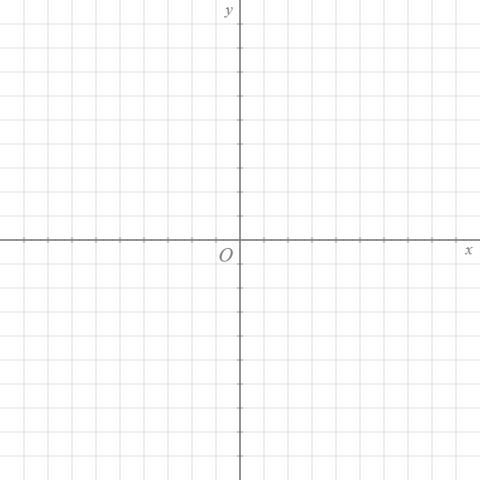

|  |
Default Template
Size: 600px*600px Range: (xmin,xmax,ymin,ymax) = (-10,10,-10,10) Description: Standard Cartesian grid with origin at its center. |
|
First Quadrant
Size: 600px*600px Range: (xmin,xmax,ymin,ymax) = (-1,11,-1,11) Description: Standard Cartesian grid but only the first quadrant is shown. |
|
|
Basic Polar
Size: 600px*600px Range: (xmin,xmax,ymin,ymax) = (-10,10,-10,10) Description: Polar coordinate background. |